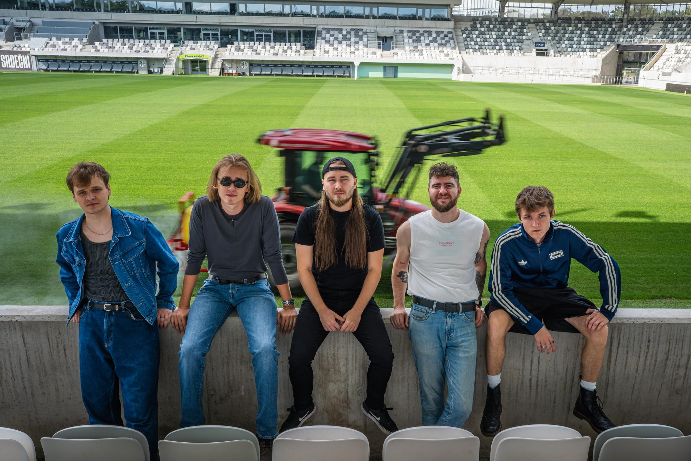
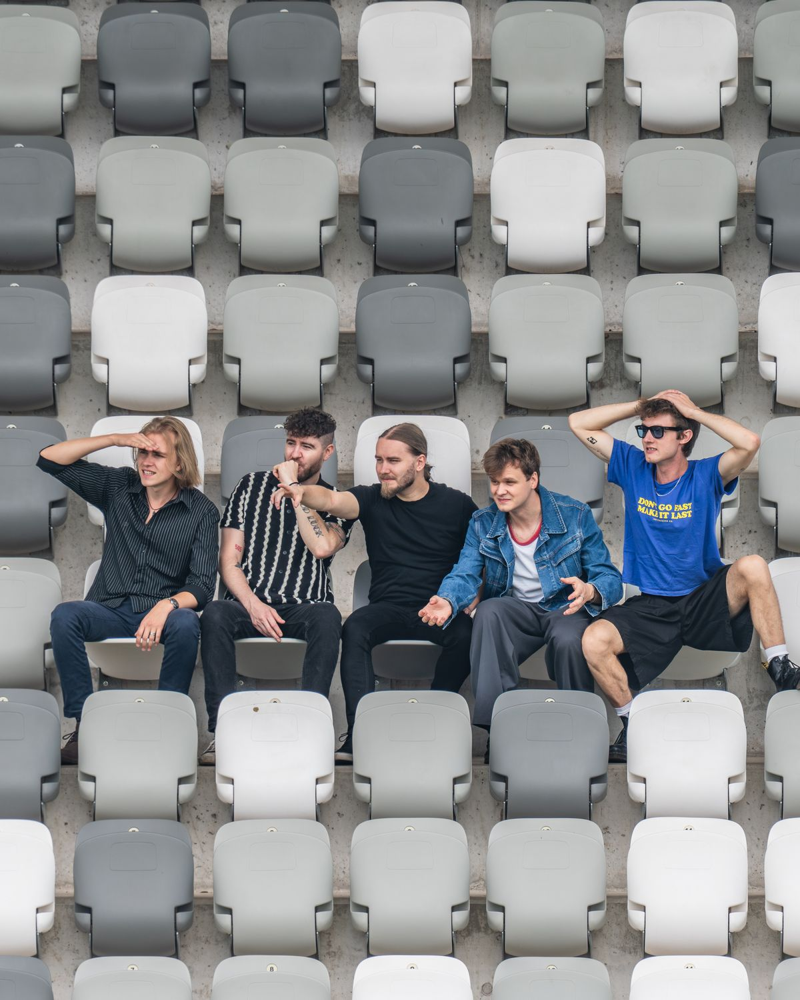

Live
Loading shows…
Music
About
We’re Ray Harty, a five-piece indie guitar band from Prague. We’ve been playing together since 2025.
We draw mainly on the British and Irish guitar scene – the energy of post-punk and the big melodies of britpop. After winning Zapínač, a nationwide competition for young bands, we played ČEZfest alongside David Koller and Pokáč and opened for Reflections of Karma in Hradec Králové.
In 2026 we released the singles “fomo” and “the world is spinning (demo)”, and we’re now working on our debut album.

Contact
Listen & follow